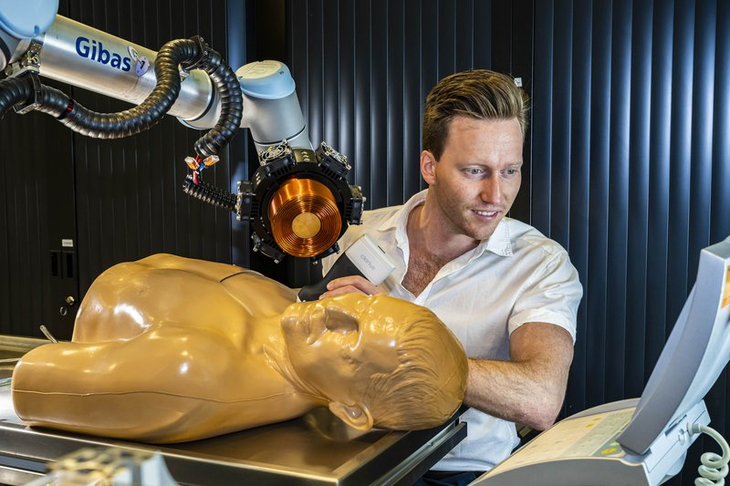

Magnetic navigation · armm_heunis2020
ARMM
ARMM (Advanced Robotics for Magnetic Manipulation)

1 / 4


- Family
- Magnetic navigation (magnetic-navigation)
- Devices
- commercial Sherpa NX Active 2 mm coronary guide catheter (500 mm) with five NdFeB magnets (2 mm x 2 mm) in the tip
- Degrees of freedom
- two UR manipulators (UR10 carries the electromagnetic coil, UR5 carries the ultrasound probe) plus a 1-axis catheter insertion device
- Push
- Magnetic
- Twist
- Field direction
- Tested up to
- Phantom
- Sim-to-real
- None found — No simulation-trained controller found for this robot.
Testing
- Highest level
- Phantom
- What was tested
- gelatin torso phantom with pulsating flow, 3D targets, PI control; target count N.R. in my read
- Key numbers
- coil at least 20 mT and over 0.6 mT/mm at 50-200 mm; mean tip error 2.09 +/- 0.49 mm; median time to target 32.6 s
Mechanism
- Push (translation)
- magnetic (steering); separate insertion device, servo-driven gear and bearing, 1.3-6.4 mm/s, takes 3-34 Fr
- Twist (rotation)
- coil pose, no shaft rotation
- Device range
- 500 mm catheter
- Target anatomy
- iliac / aortic phantom from CT of a 62-year-old (gelatin torso phantom, pulsating flow)
Sensing and interface
- Force sensing
- none; tip tracked by ultrasound (30 Hz) and motion capture
- Leader and haptics
- no
- Imaging
- 3D ultrasound feedback, optical motion capture; radiation-free
- Sterility
- N.R.
Size
- Footprint (mm)
- workspace sphere radius 783 mm (max 1300 mm); 9 m3 environment
- Mass (kg)
- N.R.
Simulation
- Simulation model
- none found (dipole-field actuation model; no simulator)
- Sim-trained controller
- none found
Versions
- Lineage
- single (RA-L 2020); coil optimisation in Sikorski 2019 (cited, not read); 2016: Twente (Misra) magnetically actuated catheter in closed loop on 2D ultrasound (Boskma, Scheggi, Misra 2016 BioRob) (Alekseeva 2025 Table 12 row 6) (alekseeva2025_design)
Sources
- The ARMM System - Autonomous Steering of Magnetically-Actuated Catheters: Towards Endovascular Applications · IEEE Robotics and Automation Letters, 2020 · doi:10.1109/lra.2020.2965077 [heunis2020_armm]
- The Design of Endovascular Robots for Cardiac Interventions: A Survey · Journal of Field Robotics, 2024 · doi:10.1002/rob.22480 [alekseeva2025_design]
Notes
- Notes
- Mobile electromagnet on a robot arm; not a clinical room install.
This record
- Read level
- full
- Picture
- U-Today 2021-06-28 "Robot for surgeries inside blood vessels", photo by Hans Wolkers: https://www.utoday.nl/uploads/images/2021/week26/_Z723444.jpg (UR arm with electromagnet over the torso phantom, researcher operating) ↗ — licence: press image (U-Today / Hans Wolkers), terms not stated; grade A
- Picture changes
- downscaled 50 % from 5315 px (no crop); not upscaled
- Found by
- actuated-tip: Search of actuated-tip and magnetic devices.
- Data
- JSON · YAML:
records/robots/armm_heunis2020.yaml - Correction
- Suggest a correction [repository not created yet]